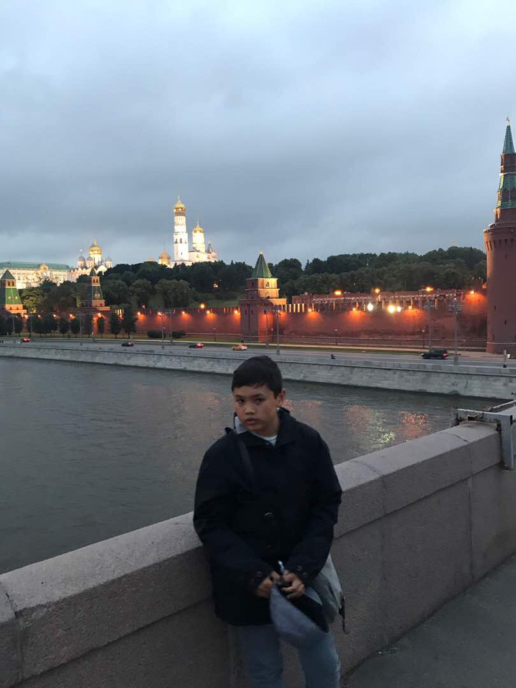

My name is Ivan Chzhou.
I was born on the 29th of July, 2005. In the capital of the Russian Federation, Moscow.
Most of my life I spent living in Shanghai, China.
To be precise, about five years.
After living in China, I moved to Vancouver, Canada.
I have lived here for over a decade, and have lived here ever since.
I have two older sisters. One is sixteen years old,
the other is twenty-seven and married.
I also have two older cousins. They are both male and are twenty-two
and twenty-six years old.
There are a few reasons why I decided to join this course.
First of all, I am interested in professional jobs involving the use of computers. Such as becoming a software engineer.
Second of all, a friend of mine shares similar interests as me.
I am considering working with him if we manage to achieve the same jobs.
The link to my favourite part of the website is listed here.